Quantile additive models using qgam and mgcViz
Matteo Fasiolo and Raphael Nedellec
September 18 2018
Source:vignettes/qgam_mgcViz.Rmd
qgam_mgcViz.RmdThe qgam R package offers methods for fitting additive quantile regression models based on splines, using the methods described in Fasiolo et al., 2017. It is useful to use qgam together with mgcViz, which extends the basic visualizations provided by mgcv.
The main fitting functions are:
-
qgam()fits an additive quantile regression model to a single quantile. Very similar tomgcv::gam(). It returns an object of classqgam, which inherits frommgcv::gamObject. -
mqgam()fits the same additive quantile regression model to several quantiles. It is more efficient that callingqgam()several times, especially in terms of memory usage. -
qgamV()andmqgamV()are two convenient wrappers that fit quantile GAMs and returngamVizobjects, for whichmgcVizprovides lots of visualizations.
An additive example with four covariates
We simulate some data from the model: \[ y = f_0(x_0)+f_1(x_1)+f_2(x_2)+f_3(x_3)+e,\;\;\; e \sim N(0, 2) \] by doing
library(mgcViz)
set.seed(2)
dat <- gamSim(1, n=1000, dist="normal", scale=2)[c("y", "x0", "x1", "x2", "x3")]## Gu & Wahba 4 term additive modelWe start by fitting a linear quantile model for the median:
fit1 <- qgamV(y ~ x0 + x1 + x2 + x3, data=dat, qu = 0.5)## Estimating learning rate. Each dot corresponds to a loss evaluation.
## qu = 0.5.........doneprint(plot(fit1, allTerms = TRUE), pages = 1)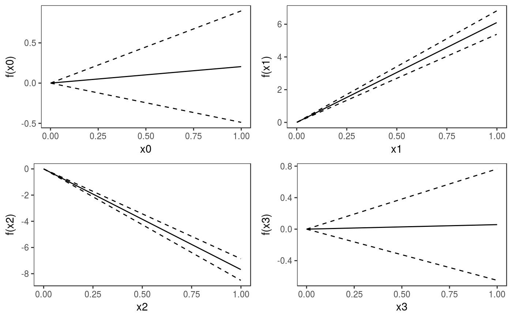 We use pages = 1 to plot on a single page, and allTerms to plot also the parametric effects (the plotting method used here plots only smooth or random effects by default).
Should we use a smooth effect of x0? If the effect of x0 was non-linear, we would expect that the number of observations falling below the fit would depart from 0.5, as we move along x0. A rudimental diagnostic plot is:
plot(dat$x0, sign(residuals(fit1)) + rnorm(nrow(dat), 0, 0.05), col = alpha(1, 0.4), pch = 16,
ylab = "Residuals sign", xlab = "x0")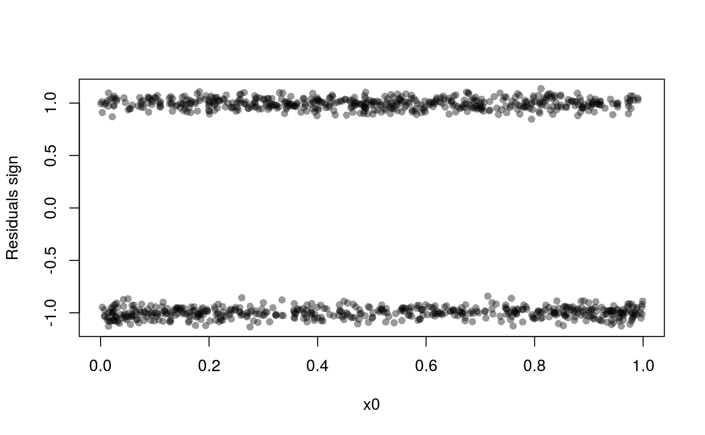 But residual pattern is more visible in the following plot:
check1D(fit1, "x0") + l_gridQCheck1D(qu = 0.5)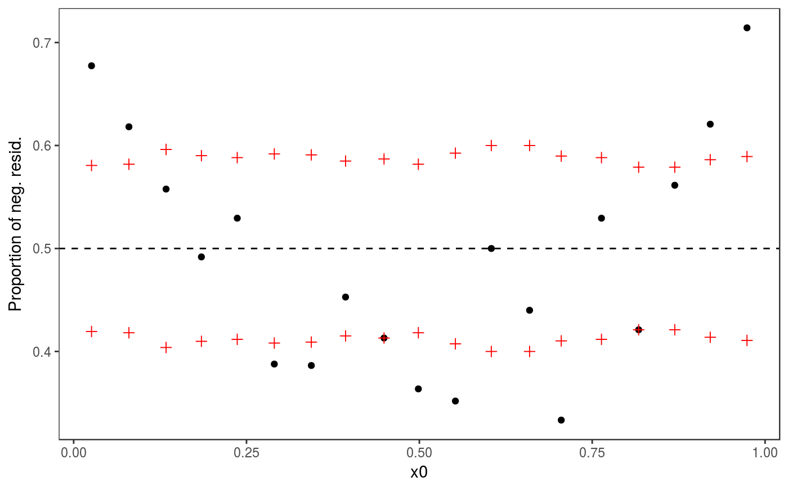 There is definitely a pattern here. An analogous plot along x2 also shows a residual pattern, hence we consider the model:
fit2 <- qgamV(y ~ s(x0) + x1 + s(x2) + x3, data=dat, qu = 0.5)## Estimating learning rate. Each dot corresponds to a loss evaluation.
## qu = 0.5.........donecheck1D(fit2, "x0") + l_gridQCheck1D(qu = 0.5)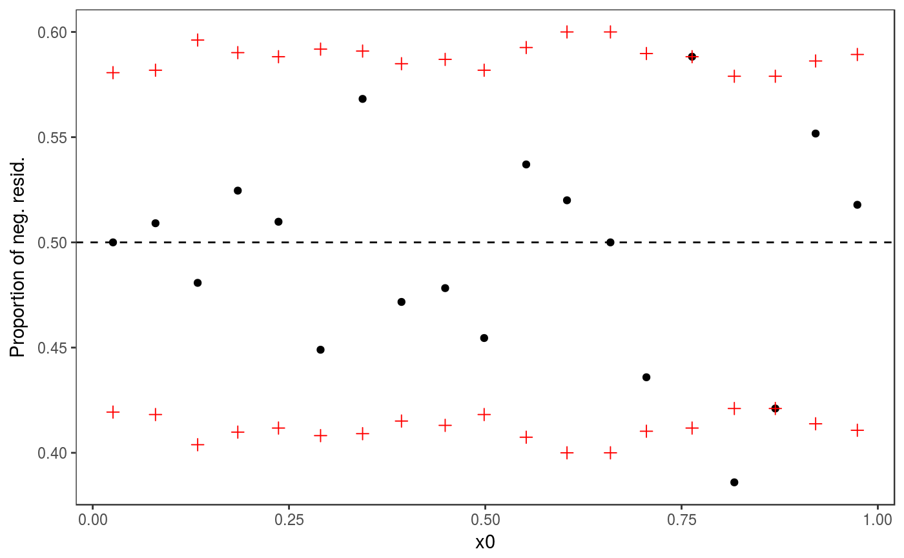 Looks much better, and leads to much lower AIC:
AIC(fit1) - AIC(fit2)## [1] 693.1062We can plot all the smooth effects by doing:
print(plot(fit2), pages = 1) To print only the second we do
To print only the second we do
print(plot(fit2, select = 2), pages = 1)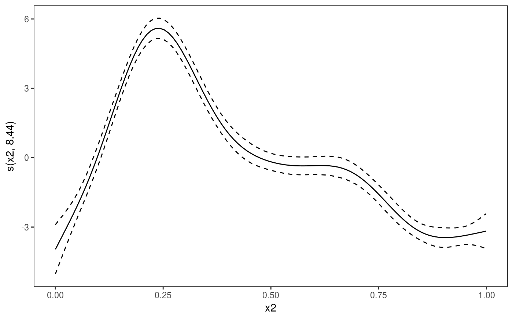
print(plot(fit2, allTerms = TRUE), pages = 1)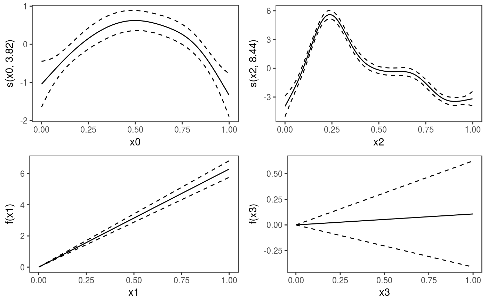 Now we fit this model to multiple quantiles and plot the fitted effects:
fit <- mqgamV(y ~ s(x0) + x1 + s(x2) + x3, data=dat,
qu = seq(0.1, 0.9, length.out = 5))## Estimating learning rate. Each dot corresponds to a loss evaluation.
## qu = 0.5.........done
## qu = 0.3........done
## qu = 0.7........done
## qu = 0.1........done
## qu = 0.9.........doneprint(plot(fit, allTerms = TRUE), pages = 1)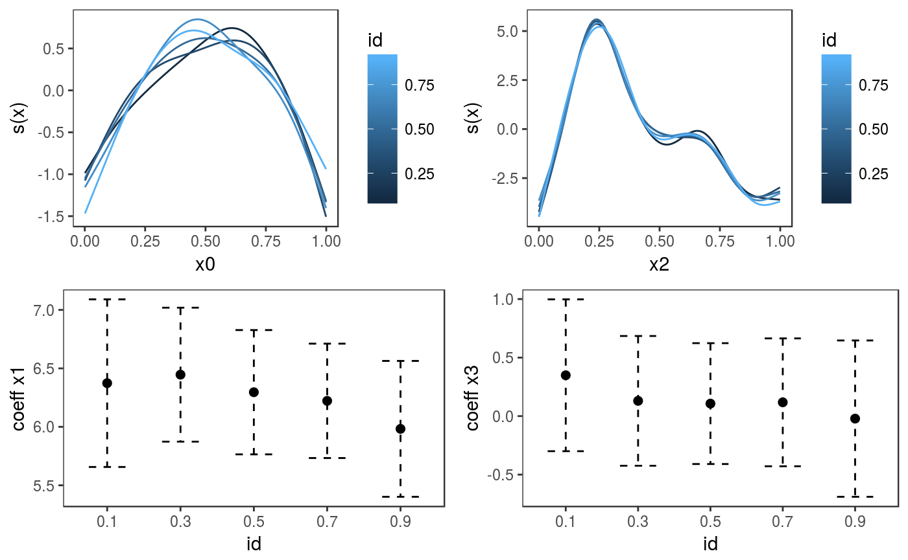
We can manipulate the five fitted quantile GAMs individually, for example
print(plot(fit[[1]], allTerms = TRUE), pages = 1)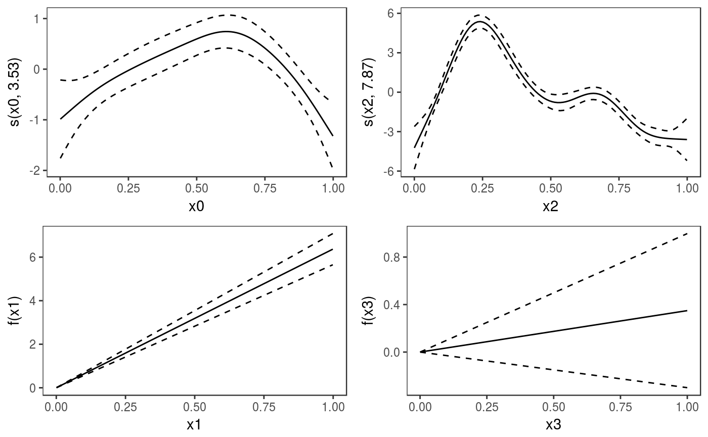
Random effect modelling: lexical decision task
In this experiment participants are presented with a sequence of stimuli and they have to decide, as quickly as possible, whether each stimulus is an existing words (eg. house) or a non-existing word (eg. pensour) by pressing one of two buttons. The variables we consider here are:
-
RTlogarithmically transformed reaction time. -
NativeLanguagea factor with levels English and Other. -
Lengththe word’s length in letters. -
Frequencylogarithmically transformed lemma frequencies as available in the CELEX lexical database. -
Subjectthe id of the individual subjects. -
Trialthe rank of the trial in the experimental list. -
Worda factor with 79 words as levels.
We might be interested in modeling the relation between the response time and length, frequency, native language and trial, and we might want to control for word and subject. We start by loading the data and fitting a simple QGAM model for the median:
library(languageR)
data(lexdec)
lexdec$RT0 <- exp( lexdec$RT ) # Should not need to use log-responses to normalize
fit <- qgamV(RT0 ~ s(Trial) + NativeLanguage + s(Length, k = 5) + s(Frequency),
data = lexdec, qu = 0.5)## Estimating learning rate. Each dot corresponds to a loss evaluation.
## qu = 0.5...........doneprint(plot(fit), pages = 1)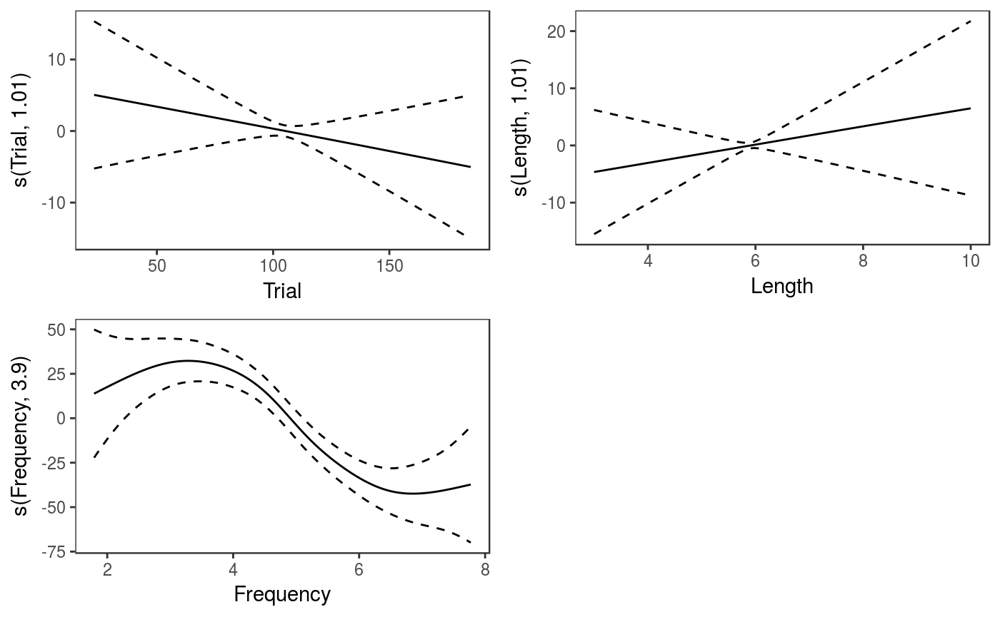 It is natural to ask ourselves whether we should control for Subject and for Word:
# check1D(fit, "Subject") would not work because it was not included in the original fit
check1D(fit, lexdec$Subject) + l_gridQCheck1D(qu = 0.5)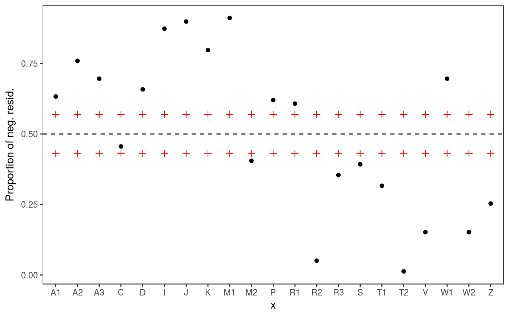
check1D(fit, lexdec$Word) + l_gridQCheck1D(qu = 0.5)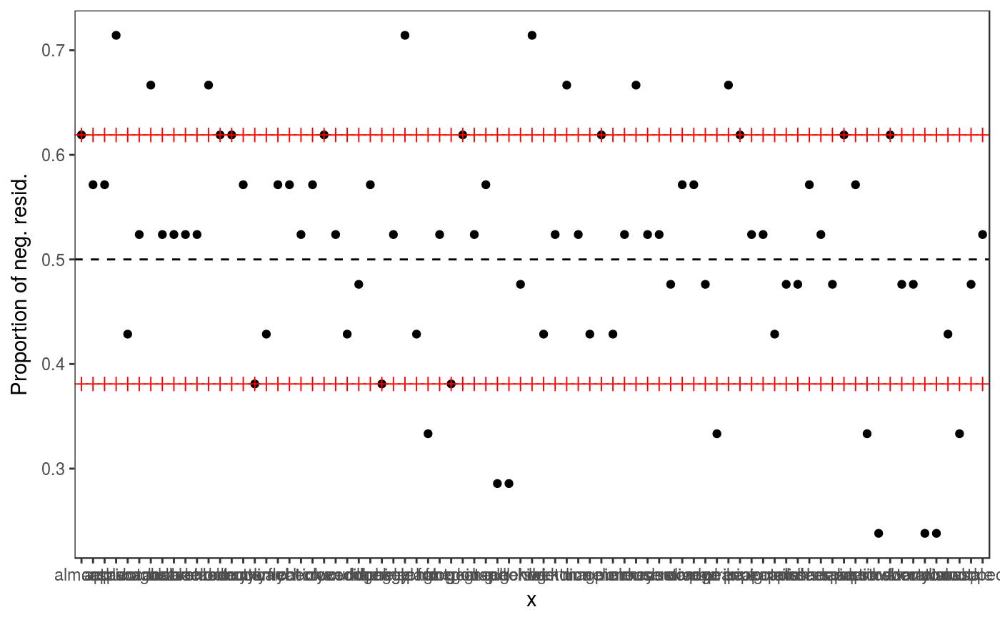 It seems so, hence we refit using two random effects:
fit2 <- qgamV(RT0 ~ s(Trial) + NativeLanguage + s(Length, k = 5) +
s(Frequency) + s(Subject, bs = "re") + s(Word, bs = "re"),
data = lexdec, qu = 0.5)## Estimating learning rate. Each dot corresponds to a loss evaluation.
## qu = 0.5..............donecheck1D(fit2, "Subject") + l_gridQCheck1D(qu = 0.5)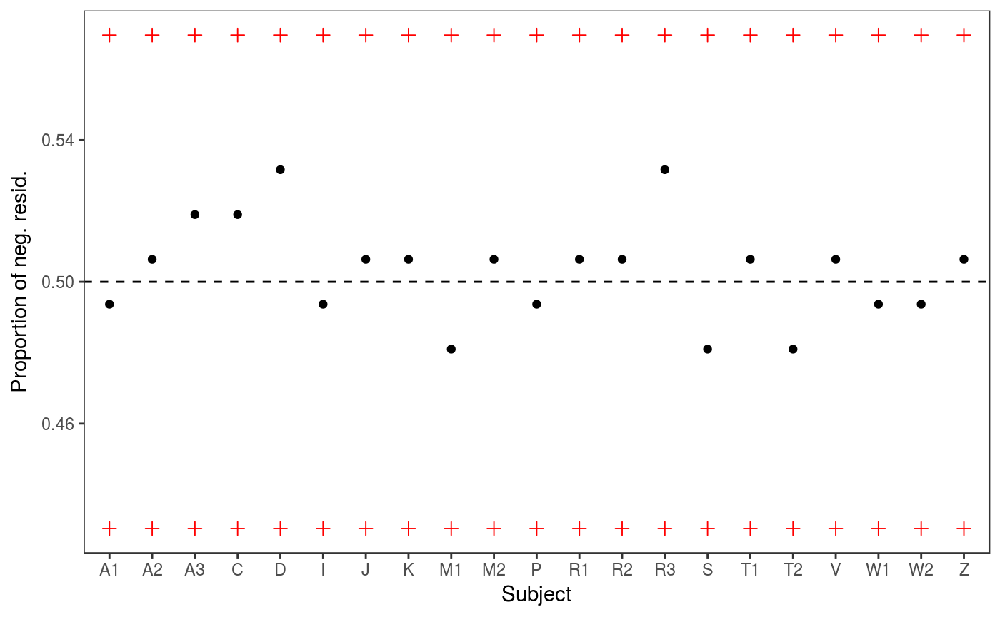
check1D(fit2, "Word") + l_gridQCheck1D(qu = 0.5)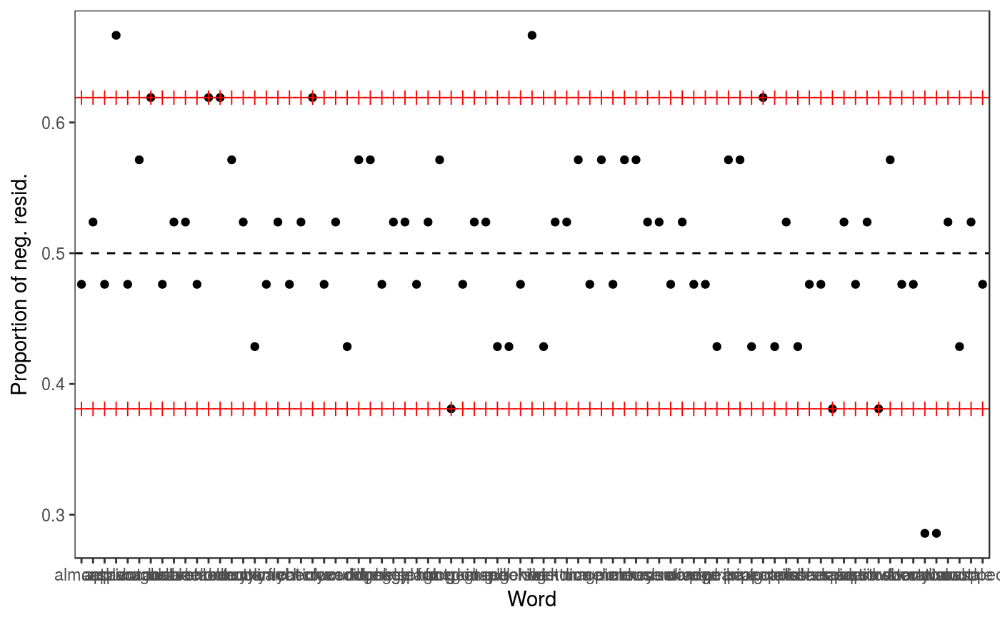
AIC(fit) - AIC(fit2)## [1] 831.7504We achieve lower AIC and the residuals checks look better (especially the one for Subject).
A potentially interesting question is then: is the effect of Trial different for native and non-native speakers? We can verify this by using a by-factor smooth:
fit3 <- qgamV(RT0 ~ s(Trial, by = NativeLanguage) + # <- by-factor smooth
NativeLanguage + s(Length, k = 5) + s(Frequency) +
s(Subject, bs = "re") + s(Word, bs = "re"),
data = lexdec, qu = 0.5)## Estimating learning rate. Each dot corresponds to a loss evaluation.
## qu = 0.5..........doneprint(plot(fit3), pages = 1)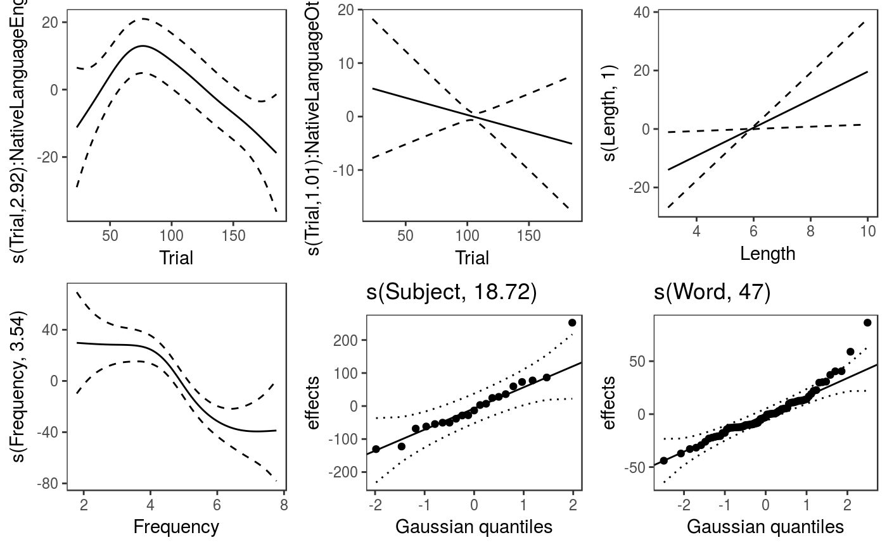 Can look directly at the difference between the by-factor smooths by doing:
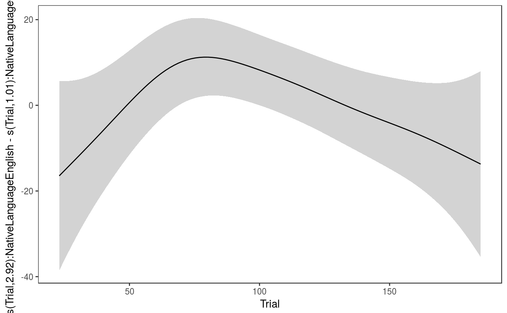 There might be something there, but the difference is not very strong.
Now that we have converged on a (hopefully reasonable) model, we can fit it to several quantiles:
fit5 <- mqgamV(RT0 ~ s(Trial, by = NativeLanguage) + NativeLanguage + s(Length, k = 5) +
+ s(Frequency) + s(Subject, bs = "re") + s(Word, bs = "re"),
data = lexdec, qu = seq(0.2, 0.8, length.out = 5))## Estimating learning rate. Each dot corresponds to a loss evaluation.
## qu = 0.5..........done
## qu = 0.35.................done
## qu = 0.65...........done
## qu = 0.2...................done
## qu = 0.8...........doneprint(plot(fit5, allTerms = TRUE), pages = 2, ask = FALSE)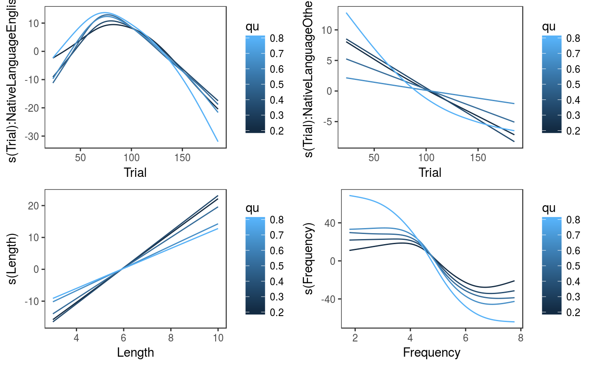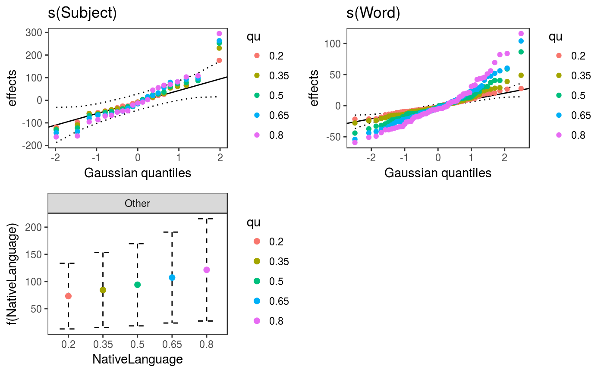 The effects are fairly stable across quantiles, the effect of Frequency might be stronger for high quantiles. We can examine the fitted quantile models individually:
summary(fit5[[5]])##
## Family: elf
## Link function: identity
##
## Formula:
## RT0 ~ s(Trial, by = NativeLanguage) + NativeLanguage + s(Length,
## k = 5) + +s(Frequency) + s(Subject, bs = "re") + s(Word,
## bs = "re")
##
## Parametric coefficients:
## Estimate Std. Error z value Pr(>|z|)
## (Intercept) 628.06 31.71 19.80 <2e-16 ***
## NativeLanguageOther 121.46 48.01 2.53 0.0114 *
## ---
## Signif. codes: 0 '***' 0.001 '**' 0.01 '*' 0.05 '.' 0.1 ' ' 1
##
## Approximate significance of smooth terms:
## edf Ref.df Chi.sq p-value
## s(Trial):NativeLanguageEnglish 2.208 2.733 8.547 0.0247 *
## s(Trial):NativeLanguageOther 1.195 1.355 0.487 0.5102
## s(Length) 1.003 1.004 0.760 0.3842
## s(Frequency) 2.789 3.062 36.604 7.26e-08 ***
## s(Subject) 18.483 19.000 886.997 < 2e-16 ***
## s(Word) 43.904 76.000 207.497 3.22e-05 ***
## ---
## Signif. codes: 0 '***' 0.001 '**' 0.01 '*' 0.05 '.' 0.1 ' ' 1
##
## R-sq.(adj) = 0.438 Deviance explained = 46.8%
## -REML = 10834 Scale est. = 1 n = 1659References
- Fasiolo, M., Goude, Y., Nedellec, R. and Wood, S. N. (2017). Fast calibrated additive quantile regression. Available at https://arxiv.org/abs/1707.03307